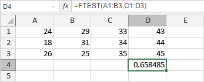

FTEST funkcija
Funkcija FTEST je jedna od statističkih funkcija. Koristi se za vraćanje rezultata F-testa. F-test vraća dvostranu verovatnoću da varijanse u array1 i array2 nisu značajno različite. Koristite ovu funkciju da biste utvrdili da li dva uzorka imaju različite varijanse.
Sintaksa
FTEST(array1, array2)
Funkcija FTEST ima sledeće argumente:
| Argument | Opis |
|---|---|
| array1 | Prvi opseg vrednosti. |
| array2 | Drugi opseg vrednosti. |
Napomene
Tekst, logičke vrednosti i prazne ćelije se ignorišu, ćelije koje sadrže nulte vrednosti se uključuju. Ako je broj vrednosti u opsegu podataka manji od 2 ili je varijansa niza 0, funkcija vraća vrednost greške #DIV/0!.
Kako primeniti funkciju FTEST.
Primeri
Slika ispod prikazuje rezultat koji vraća funkcija FTEST.
